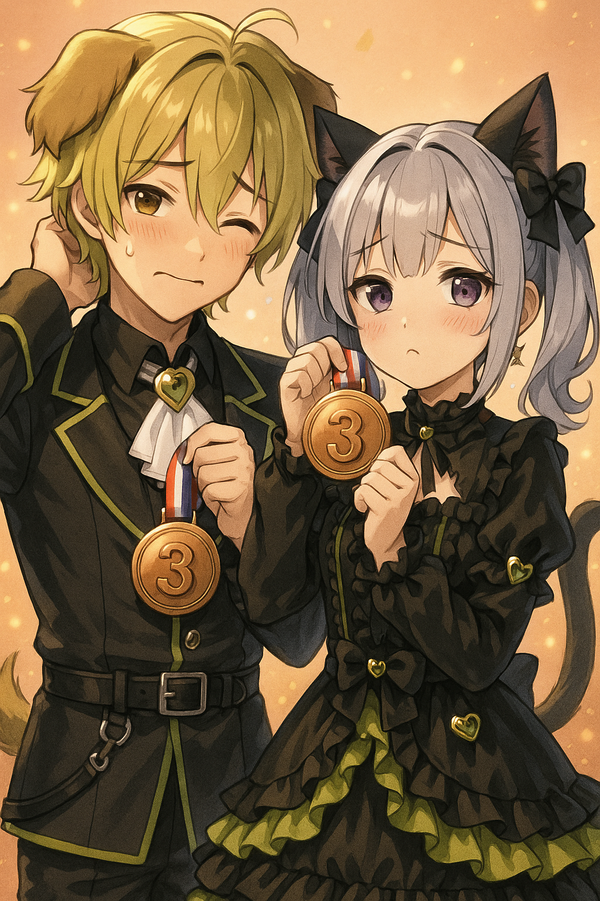

猫と犬の心理研究クイズ
Q1. 犬派と猫派、「平均すると性格にちょっとした違い」がある？
Q2. 猫は「赤ちゃん言葉」なら誰の声でもご機嫌になる？
Q3. 猫は自分の名前、ほんとに聞き分けてる？
Q4. 犬と見つめ合うと上がりやすいホルモンは？
Q5. 猫にも「飼い主への愛着タイプ（安全型など）」ってある？
Q6. 犬は「おやつ」と「ほめられる」、どっち派が多い？
Q7. 猫は“音だけ”でも、飼い主のだいたいの位置を追える？
Q8. 犬のしっぽ、気分で「右寄り/左寄り」にクセが出る？
Q9. 人の“ゆっくり瞬き”は、猫にとって？
Q10. 犬の散歩、飼い主の運動量はどうなる？

正解：0 / 10
固定観念アップデート中
＜法務メモ＞本ページは娯楽・教育目的の要約であり、医療・行動指導の代替ではありません。研究結果には前提条件や個体差・再現性の議論があります。画像・テキストの著作・商標等は各権利者に帰属します。